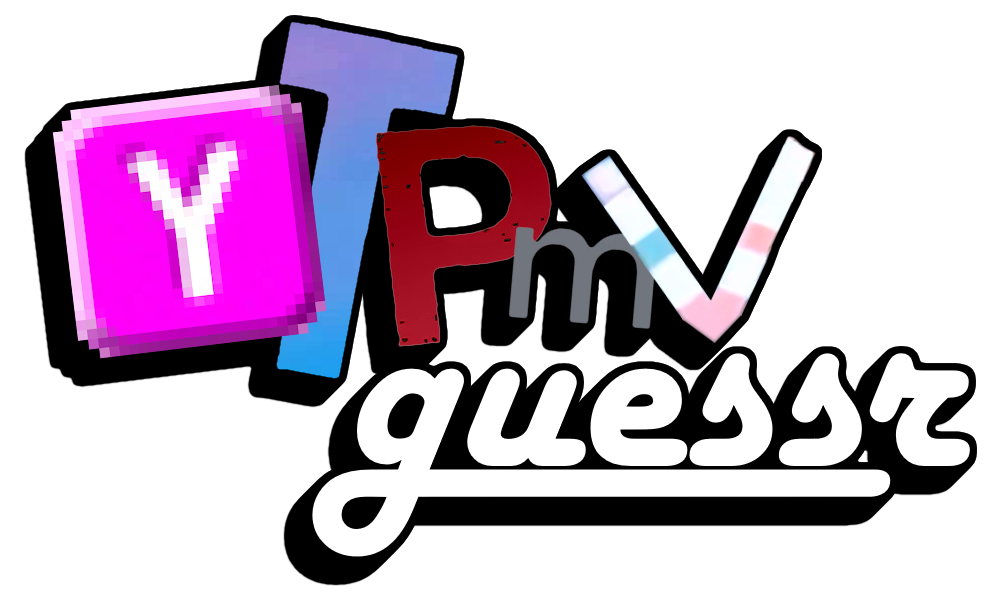

It's a kind of "remix style" in which a song is remade with sounds from a or various videos.
The videos used are called sources, and can came from popular videos, memes, private jokes, songs, advertissements or much more. Usually, a source is composed of various videos as long it has the same character, but in this game you have to be precise. For example with the source "Jack Black defines Octagon", sometimes you'll need to be more precise : "Ask Jack Black", "Backstage with Elmo: Jack Black", "Elmo", "Jack Black", "Jack Black and Elmo - Disguise", "Ty Burrell", "Ty Burrell:Hexagon", etc.
For the song, it's usually a popular song on the Internet, but it can be anything (even an original composition). There's only one special case, collabs. Not all of them, but mostly, uses a medley composed of multiple songs, and it's the name of the medley that needs to be found and not each individual songs.
Last note about the creators, it's the hardest part to guess, but sometimes, with the style or the selection of sources, it's possible to find out who made it, so that's why I kept it in the game.
The interface is very simple. It's a player with a play or pause button, a stop button, and a seek bar which is usable only after the play button has been pressed once. Bellow this player, there are three inputs, respectfully for creators, sources and songs, in which you can put one guess per input at a time. You can submit your answers with the submit button, and if you are stuck and want to move on, you have the reveal answer button which will end the round.
On the top left-hand corner is shown the current round number, on the top right-hand corner is displayed your current score and finally, if enabled, is indicated on the bottom left-hand corner the time left before the end of the round.
All answers are in lowercases, and the most popular one in English. However, somes are in their original languages (mostly Japanese, Chinese or Korean), this may be why you can't find what you're looking for sometimes.
A correct creator give 300 points, and a correct source or song give 100 points. Only for sources and songs, if you make multiple correct guesses in a row, you have a multiplier based on your streak. In that case, if you make a eighth correct guess in a row, it'll be worth 800 points instead of 100.
This only applies for users on desktop or computer. You can hover on a key symbol to get his name.
Space / k : plays the YTPMV
⌫ / 0 : stops the YTPMV
← / l : backwards 5 seconds
→ / j : forwards 5 seconds
⇧ : focuses the creator input
⇥ : focuses the next input
⇧ + ⇥ : focuses the previous input
↵ : submit the guesses
This project was possible thanks to otodb ! Only the necessary data is collected (ids, creators, sources, songs, names and thumbnails) and is stored locally for better performances.
The APIs of YouTube, of Nico Nico Douga and of Soundcloud are used in order to play the YTPMV.
The logo is composed of the Fancy Island logo (Y), the "STOP" from the stop sign in "Sesame Street: Jack Black defines Octagon" with the background (T), the Epic Rap Battle of History logo (P), the title "Tomato One" from Michael Rosen's poems (M) and of the pool strip test from sullyrox's video "is the pool clean?" (V).
The code is open source on Github !
00:00 / 00:00
Sources
Songs